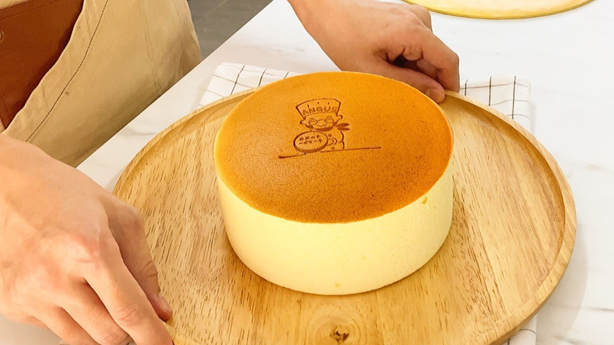

Japanesse Cheesecake

This oriental cheescake is realy smoth and delicius
Ingredients
- 200g of cream cheese
- 20g of the butter of your preference
- 50ml of the milk you prefer
- 3 egg yolk
- 30g of wheat flour
- 3 egg whites
- 55g of sugar
- A litle of icing sugar
Steps
- Prepare a pot wiht boiling water
- In one bowl add the cream cheese, the butter and the milk and start to gently mix all
- Put the bowl up to the boiling water pot
- Check the temperature not be higher than 50 degrees Celsius
- Add the yolks and continue the mixing
- Add the flour previously strain it, continue to mix it bot more gently from here
- Strain the mix
- Put the mix in the freezer on till the temperature reach the 10 degrees Celsius
- In another bowl add tge egg whites and the sugar, whip the merengue
- Save it in the freezer
- Prepare the baking pan oiled with butter
- Mix 1/3 of the merengue with the cheese mix, then add the rest of the merengue and mix it all
- Put all the mix in the baking pan
- Put the baking pan in a larger pan with hot water
- Bake for 40 to 50 minutes at 140-150 degrees Celsius
- After the 40-50 min. raise the temperature at 180 degrees for 10 to 15 more minutes, we want a golden finish in the crust
- Turn off the oven and keep the cheescake in there by 10 minutes more
- Ready! you can enjoy it warm or cool it too
Come back to the main page